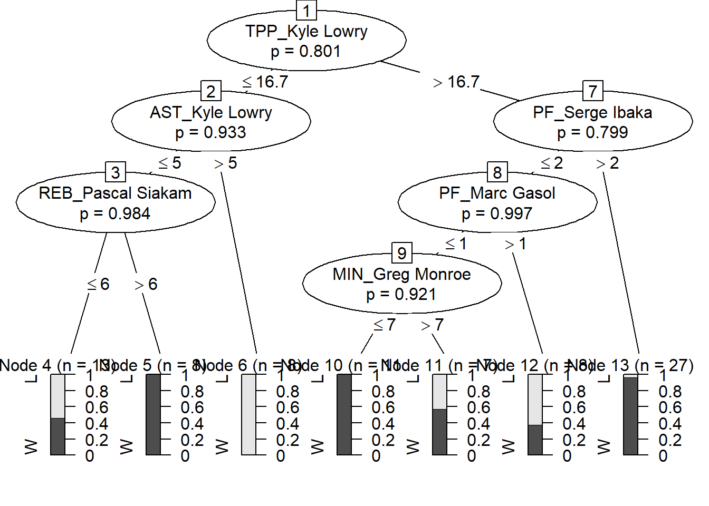
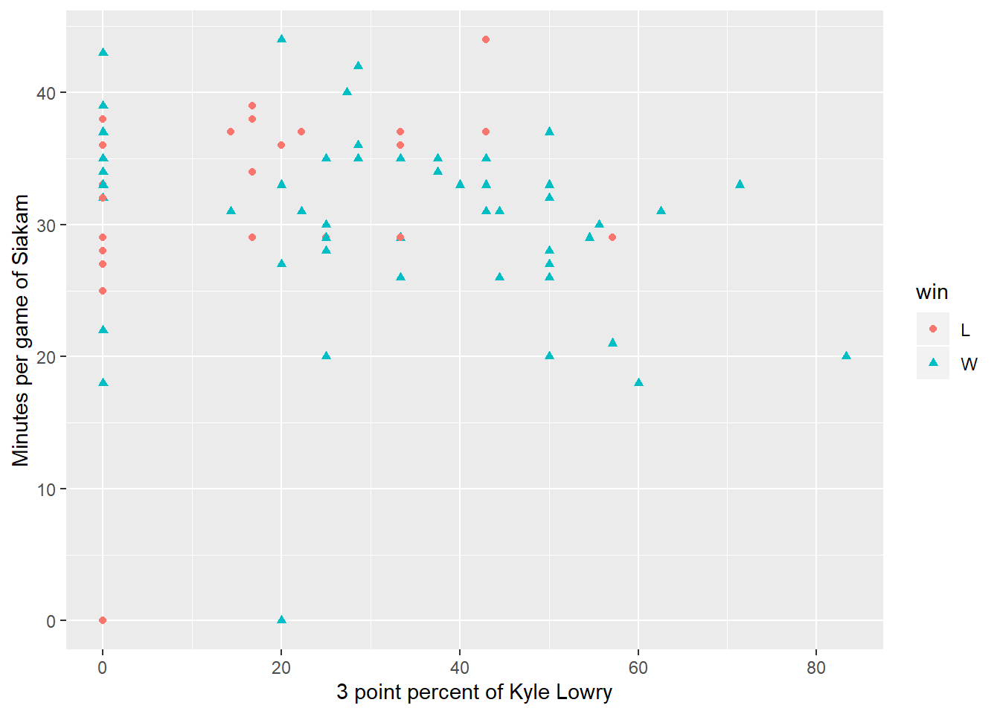
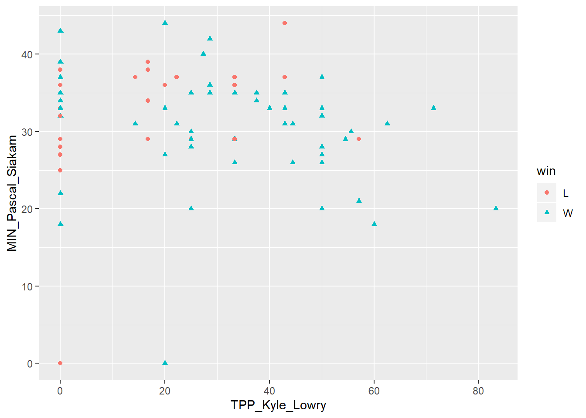
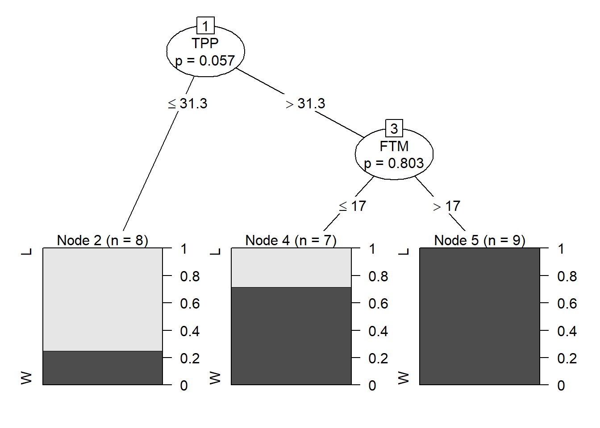

Toronto Raptors won the 2018-2019 NBA Championship, which is really exciting. I watched the playoffs even months after the season was over. As a data analyst, I find datas of Raptors and did this analysis. Since tree methods could apperantly display the relations between the feature variables and the response variable, it is appropriate to use them to reveal the factors of wining.
library(readr)
library(dplyr)
library(tidyr)
library(reshape2)
library(magrittr)
library(party)
library(rpart)
library(rpart.plot)
library(ggplot2)#Kawhi Leonard Kyle Lowry Malcolm Miller
#Serge Ibaka Danny Green
regular_players <- regular_players %>%
na_if('-') %>%
rename('TPP'='3P%','FTP'='FT%',
'FGP'='FG%','win'='W/L') %>%
mutate_if(sapply(.,is.character),as.factor) %>%
select(-'+/-')
#long to wide
players <- raptors_players %>%
dcast(DATE~PLAYER)
#date=group, player=time
library(tidyr)
players <- regular_players %>%
gather(key,value,-TEAM,-MATCHUP,-DATE,-PLAYER,-win) %>%
unite(col, key,PLAYER) %>%
spread(col,value) %>%
select(-TEAM,-MATCHUP,-DATE) %>%
replace(is.na(.), 0) %>%
mutate_if(sapply(.,is.character),as.numeric) head(data.frame(players)[1:5]) win X3PA_Chris.Boucher X3PA_CJ.Miles X3PA_Danny.Green X3PA_Delon.Wright
1 W 0 0 2 2
2 L 2 1 6 3
3 W 0 0 3 1
4 W 1 0 8 2
5 W 0 0 0 1
6 W 1 2 3 3tree <- ctree(win~.,players,
controls = ctree_control(mincriterion = 0.00001,minsplit=9))
plot(tree)
treept <- rpart(win~.,players,
control = rpart.control(cp=0.0001,minsplit=6))
rpart.plot(treept, branch = 0.4)
players %>%
rename('TPP_Kyle_Lowry'='TPP_Kyle Lowry','MIN_Pascal_Siakam'='MIN_Pascal Siakam') %>%
ggplot() +
geom_point(aes(TPP_Kyle_Lowry,MIN_Pascal_Siakam,shape=win,col=win))
Playoffs
playoffs <- raptorsplayoffs %>%
arrange(DATE) %>%
na_if('-') %>%
rename('TPP'='3P%','FTP'='FT%',
'FGP'='FG%','win'='W/L') %>%
mutate_if(sapply(.,is.character),as.factor)
formula <- win~PTS+FGM+FGA+FTM+FTA+OREB+DREB+REB+AST+STL+BLK+TOV+PF+FTP+TPP+FGP
tree <- ctree(formula,playoffs,
controls = ctree_control(mincriterion = 0.01,minsplit=3))
plot(tree)
treept <- rpart(formula,playoffs,
control = rpart.control(cp=0.001,minsplit=3))
rpart.plot(treept, branch = 0.4)
- Since the quantity of playoff data is too small, the results of the trees are unstable. Even discrepencies between the
rpartandctreefunction are huge. Now let us analyze the Regular Season data, which contains 82 games.
Regular Season
regular<- raptorsreg %>%
arrange(DATE) %>%
na_if('-') %>%
rename('TPP'='3P%','FTP'='FT%',
'FGP'='FG%','win'='W/L') %>%
mutate_if(sapply(.,is.character),as.factor)
tree <- ctree(formula,regular,
controls = ctree_control(mincriterion = 0.01,minsplit=3))
#plot(tree)
plot(tree,type = "simple")
Figure 1: The tree using party package.
treept <- rpart(formula,regular,
control = rpart.control(cp=0.05,minsplit=3))
rpart.plot(treept, branch = 0.4)
Figure 2: When raptors score more than 111 and the field goals attempted more than 81, they will win in a high chance. If they get less than 111 points and shoot more than 82 times, they will definitely lose.
As you could see, the two trees are much same than before.
ggplot(regular)+
geom_point(aes(PTS,FGA,
shape=win,col=win)) +
geom_segment(aes(111,81,
xend = 111,yend = 110),
col='purple') +
geom_segment(aes(111,81,
xend = 141,yend = 81),
col='purple')+
annotate('text', x =130,y=95, label='Win', size=10,color='turquoise4') +
annotate('text', x =95,y=85, label='Lose', size=10,color='tomato') +
labs(x='Points',y='Field Goals Attempted')Figure 3: Partition borders of the CART tree.